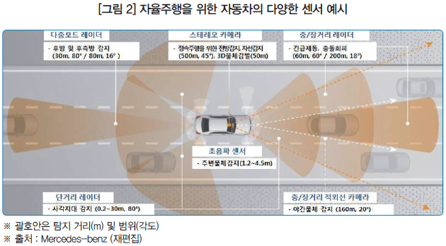
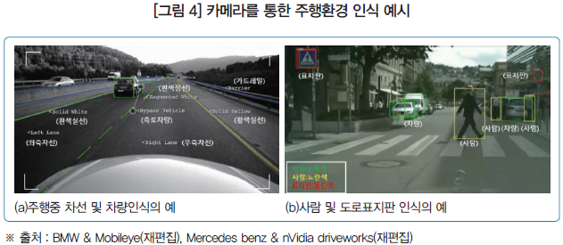
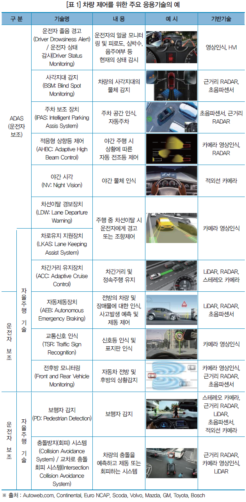

자율주행차는 사람이 운전을 하지 않아도 스스로 움직이며 차량을 운행하는 자동차를 말합니다.
자율주행에는 크게 두가지 방식이 있습니다. 교통 수단 내에 운행하는 사람이 없고 외부에 있는 서버와 통신하며 서버의 명령에 따라 주행하는 무인운전 방식과, 교통수단 내부에 탑재된 인공지능 컴퓨터가 스스로 판단하여 주행하는
방식으로 나눌 수 있습니다.
자율 주행 자동차의 원리는 크게 인지-판단-제어 3단계로 나눌 수 있습니다.
1.인지단계
인지는 자율 주행 자동차의 가장 중요한 기술이라고 할 수 있습니다. 주변 상황과 정보를 빠르고 정확하게 파악할 수 있어야
적절한 판단과 제어를 할 수 있기 때문입니다. 인지단계에서는 GPS와 카메라, 레이더 등을 활용해 주변 상황의 정보를 인식하고 수집합니다.
인지에 필요한 GPS는 기존에 우리가 사용하는 내비게이션 GPS는 오차가 10~30m에 달하기 때문에 이 정보만으로는 운행할 수 없으며
오차가 1m 이내 수준의 정확한 GPS 정보가 필요합니다. 그리고 음파 장비와 3D 카메라, 레이더 장비 등 원격 레이저 시스템이
빼곡히 들어가 있는 라이다(LiDAR)는 자율 주행 자동차의 눈으로 알려져 있습니다.

2.판단단계
판단 단계에서는 인지 정보를 바탕으로 주행 전략을 결정합니다. 자동차가 어떤 환경에 놓여 있는지를 파악하고 이미지를 분석한 후, 주행 환경과 목표지점에 적합한 주행 전략을 수립하고 판단하게 됩니다. 판단에 관련된 기술은 차량 내부에 탑재되어 눈으로 확인하기는 어렵지만, 판단은 인지와 밀접하게 연관되는 만큼 두 기술이 얼마나 잘 조화를 이루느냐에 따라서 자율 주행의 완성도가 좌우됩니다.

3.제어단계
제어 단계에서는 엔진 구동과 주행 방향 등을 결정하며 본격적으로 주행을 시작하게 됩니다. 인지가 눈과 귀와 같은 감각기관, 판단을 두뇌라고 한다면 제어는 직접 움직이는 팔이나 다리라고 할 수 있습니다. 차량을 움직이는 제어에는 크게 조향과 가감속기술이 있는데 조향은 스티어링 방향의 조작하는 기술, 가감속은 가속과 제동을 통해서 차량을 달리게 하거나 멈추게 하는 기술입니다.

자율 주행 자동차의 원리는 이렇게 끊임없이 인지-판단-제어 단계를 반복하며 소프트웨어가
자율 주행 자동차에 명령을 하고 자율 주행 자동차는 그 명령에 따라 주행하는 것입니다.